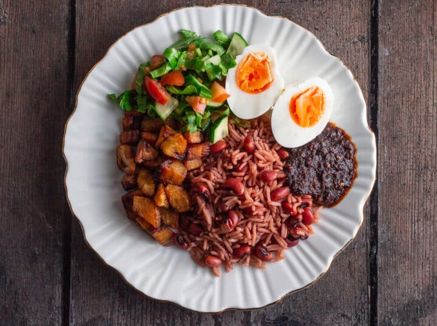

Ghanaian Rice and Beans (Waakye) Recipe

Description
The Ghanaian Rice and Beans meal, also known as Waakye is a delicious and nutrient-dense meal made from cooking rice and beans together. This meal provides a lot of calories and satiates you for a long time. It can be garnished with shito (hot pepper sauce) or any stew or sauce of your choice.
Ingredients
- 1 CUPS DRY OF BLACK-EYED PEAS
- 3 CUPS RICE(ANY RICE OF CHOICE)
- 5 CUPS OF WATER
- A PINCH OF SALT
- 1 TSP BAKING SODA/KAUN
- 6 SORGHUM/MILLET LEAVES
- 2 TEASPOON COCONUT/VEGETABLE OIL(OPTIONAL)
Steps
- PICK STONES AND GRITS FROM THE BEANS.
- SOAK THE BEANS OVERNIGHT(THIS STEP IS OPTIONAL). IF YOU ARE USING BAKING SODA OR KAUN, YOU CAN SKIP THIS STEP.
- WASH AND DRAIN THE BEANS AND THE SORGHUM STEMS USING A COLANDER.
- IN A LARGE SAUCEPAN, COOK THE BEANS WITH THE SORGHUM STEMS AT MEDIUM-LOW HEAT WITH 4 CUPS OF WATER AND OIL.
- THEN ADD THE BAKING SODA OR POTASSIUM NITRATE (KAUN).
- BOIL THE MIXTURE UNTIL THE WATER CHANGES TO PURPLE COLOR AND THE BEANS ARE PARTIALLY COOKED.
- AT THIS POINT, REMOVE THE SORGHUM STEMS (THIS STEP IS OPTIONAL). THEN ADD IN YOUR RICE OF CHOICE AND SALT TO TASTE. MIX ALL TOGETHER.
- COVER PAN WITH LID AND COOK RICE UNTIL TENDER FOR ABOUT 20-25 MINUTES. YOU CAN ADD A LITTLE WATER IF RICE IS STILL HARD.
- REMOVE FROM HEAT WHEN COOKED. SERVE WAAKYE WITH SHITO OR TOMATO STEW OR BEEF SAUCE OR PEPPER SAUCE WITH VARIOUS TOPPINGS SUCH AS FRIED FISH, EGGS, GARI, ANY MEAT OF CHOICE.
- BON APPETIT!